📅 4 พฤศจิกายน 2569
นางรุ่งระวี มีทองคำ นายกเหล่ากาชาดจังหวัดเพชรบูรณ์ เข้าเยี่ยมชมแผนกวิชาแฟชั่นและสิ่งทอ วิทยาลัยเทคนิคเพชรบูรณ์ เพื่อเยี่ยมชม ผลงานการออกแบบสิ่งทอ และงานแฟชั่นสร้างสรรค์ของนักศึ...
ติดตามความเคลื่อนไหว ผลงาน และกิจกรรมจากชมรมในวิทยาลัยเทคนิคเพชรบูรณ์
นางรุ่งระวี มีทองคำ นายกเหล่ากาชาดจังหวัดเพชรบูรณ์ เข้าเยี่ยมชมแผนกวิชาแฟชั่นและสิ่งทอ วิทยาลัยเทคนิคเพชรบูรณ์ เพื่อเยี่ยมชม ผลงานการออกแบบสิ่งทอ และงานแฟชั่นสร้างสรรค์ของนักศึ...
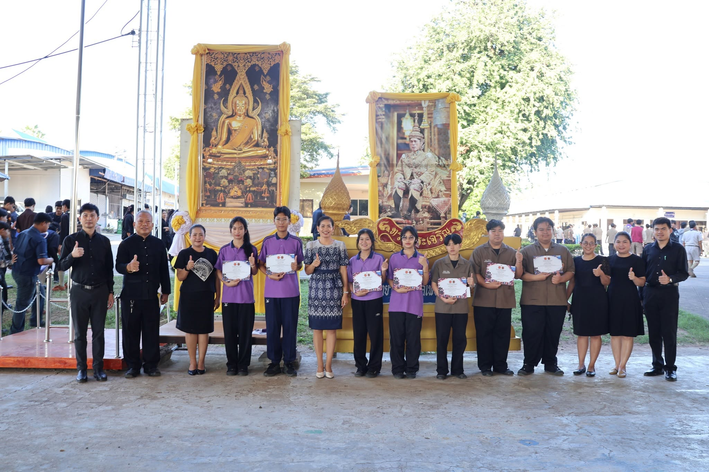
นายทองจันทร์ ประทุมโฉม ผู้อำนวยการวิทยาลัยเทคนิคเพชรบูรณ์ มอบหมายให้ นางจินตนา อุททัง รองผู้อำนวยการฝ่ายบริหารทรัพยากร เป็นตัวแทนในการมอบเกียรติบัตร แก่นักเรียน นักศึกษาที่ชนะกา...

นายทองจันทร์ ประทุมโฉม ผู้อำนวยการวิทยาลัยเทคนิคเพชรบูรณ์ ตรวจเยี่ยมการจัดการเรียนการสอนตามแผนกวิชาต่างๆ ภายในวิทยาลัยเทคนิคเพชรบูรณ์ เพื่อติดตามความพร้อมและดูแลบรรยากาศการเรียน...
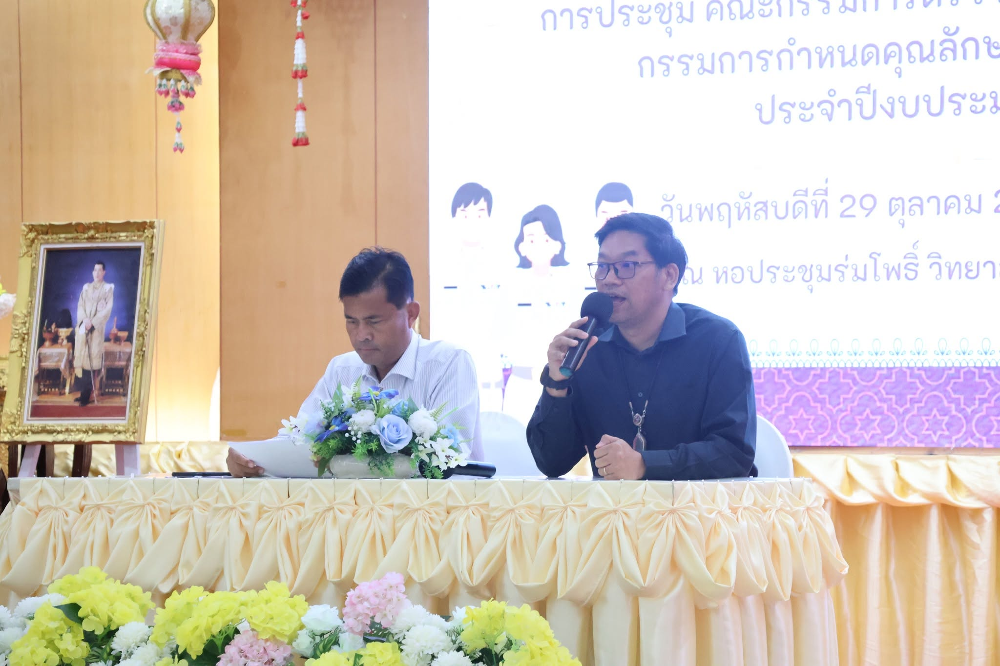
นายทองจันทร์ ประทุมโฉม ผู้อำนวยการวิทยาลัยเทคนิคเพชรบูรณ์ เป็นประธานในการประชุม คณะกรรมการตรวจรับ,กรรมการพิจารณาผล,กรรมการกำหนดคุณลักษณะเฉพาะครุภัณฑ์ ณ หอประชุมร่มโพธิ์
นายทองจันทร์ ประทุมโฉม ผู้อำนวยการวิทยาลัยเทคนิคเพชรบูรณ์ เป็นประธานในพิธีเปิดโครงการอบรม "วัคซีนไซเบอร์" (Vaccine Cyber) สร้างภูมิคุ้มกันภัยออนไลน์ โดยความร่วมมือระหว่าง...
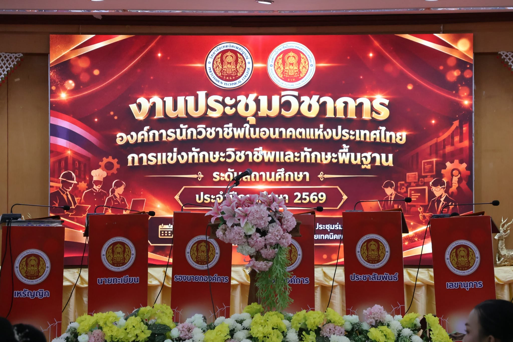
นายทองจันทร์ ประทุมโฉม ผู้อำนวยการวิทยาลัยเทคนิคเพชรบูรณ์ เป็นประธานในพิธีเปิดงานประชุมวิชาการองค์การนักวิชาชีพในอนาคตแห่งประเทศไทย (อวท.) การแข่งขันทักษะวิชาชีพ และการ...
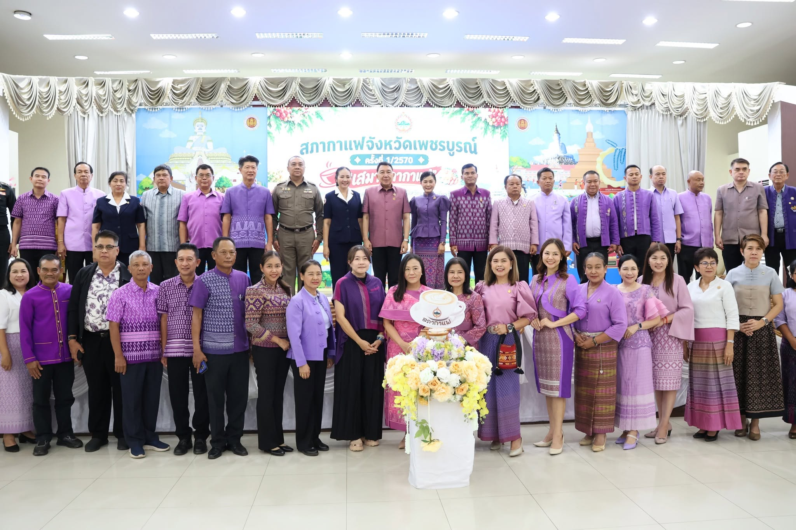
นายทองจันทร์ ประทุมโฉม ผู้อำนวยการวิทยาลัยเทคนิคเพชรบูรณ์ พร้อมด้วยคณะผู้บริหาร ร่วมกิจกรรมเสมาสภากาแฟ “จิบกาแฟ แลมิตรภาพ ร่วมสร้างจังหวัดแห่งการเรียนรู้” ณ หอประชุมอาคาร 60...
นายทองจันทร์ ประทุมโฉม เป็นประธานในพิธีเปิดการประกวดชมรมดีเด่น และสมาชิกดีเด่นภายใต้การนิเทศประจำปีการศึกษา 2569 ณ หอประชุมร่มโพธิ์ เพื่อส่งเสริมทักษะวิชาชีพและการทำงานร่วมกัน...
คณะผู้บริหาร ครู วิทยาลัยเทคนิคเพชรบูรณ์ เข้าร่วมพิธีวางพวงมาลาถวายราชสักการะ พระบรมราชานุสาวรีย์ พระบาทสมเด็จพระจุลจอมเกล้าเจ้าอยู่หัว เนื่องในวันปิยมหาราช ณ ศูนย์ราชการจังหวัดเพชรบูรณ์
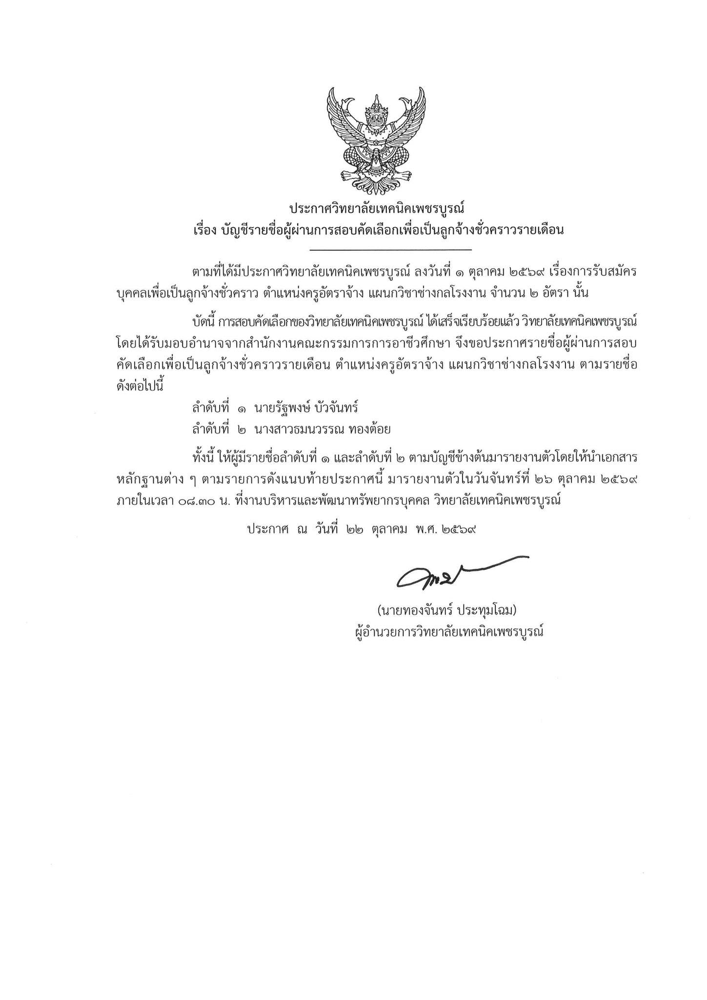
📣📣ประกาศวิทยาลัยเทคนิคเพชรบูรณ์✨✨ เรื่อง บัญชีรายชื่อผู้ผ่านการสอบคัดเลือกเพื่อเป็นลูกจ้างชั่วคราวรายเดือน ตำแหน่งครูอัตราจ้าง แผนกวิชาช่างกลโรงงาน
นายทองจันทร์ ประทุมโฉม ผู้อำนวยการวิทยาลัยเทคนิคเพชรบูรณ์ ปฏิบัติหน้าที่ ผู้อำนวยการสำนักงานอาชีวศึกษาจังหวัดเพชรบูรณ์ การประกวดสิ่งประดิษฐ์...
นายทองจันทร์ ประทุมโฉม ผู้อำนวยการวิทยาลัยเทคนิคเพชรบูรณ์ เป็นประธานในพิธีเปิดโครงการตลาดนัดชาวเทคนิค สร้างรายได้สู่ผู้เรียน ประจำปีการศึกษา 2569
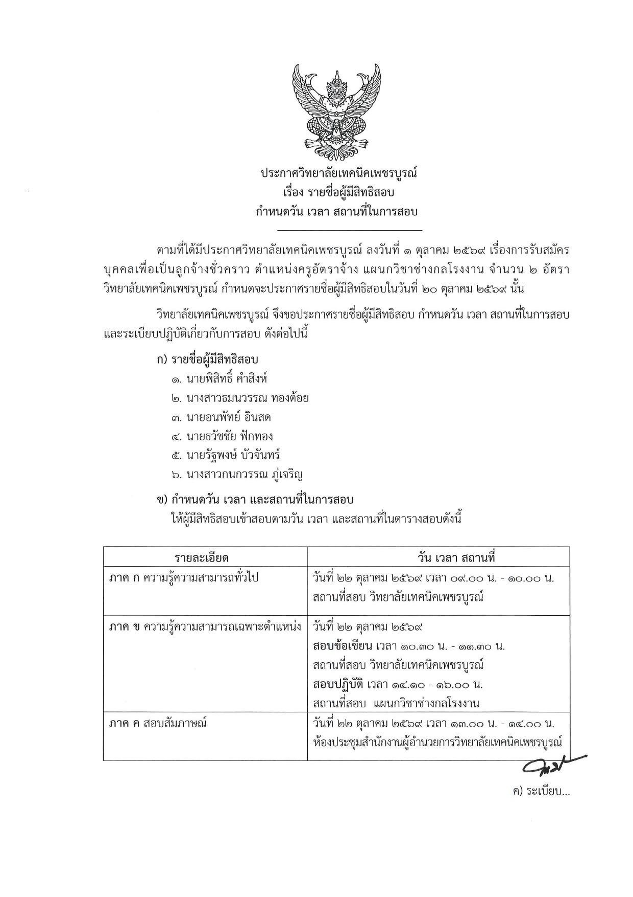
ประกาศวิทยาลัยเทคนิคเพชรบูรณ์ 🔔🔔 📌เรื่องรายชื่อผู้มีสิทธิสอบ กำหนดวัน เวลา สถานที่ในการสอบ✨✨ ลููกจ้างชั่วคราว ตำแหน่งครูอัตราจ้าง แผนกวิชาช่างกลโรงงาน จำนวน 2 อัตรา
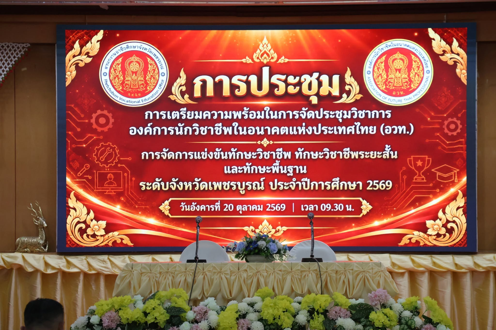
นายทองจันทร์ ประทุมโฉม ผู้อำนวยการวิทยาลัยเทคนิคเพชรบูรณ์ ปฏิบัติหน้าที่ ผู้อำนวยการสำนักงานอาชีวศึกษาจังหวัดเพชรบูรณ์ ✨ เป็นประธานในการประชุมเตรียมควา...
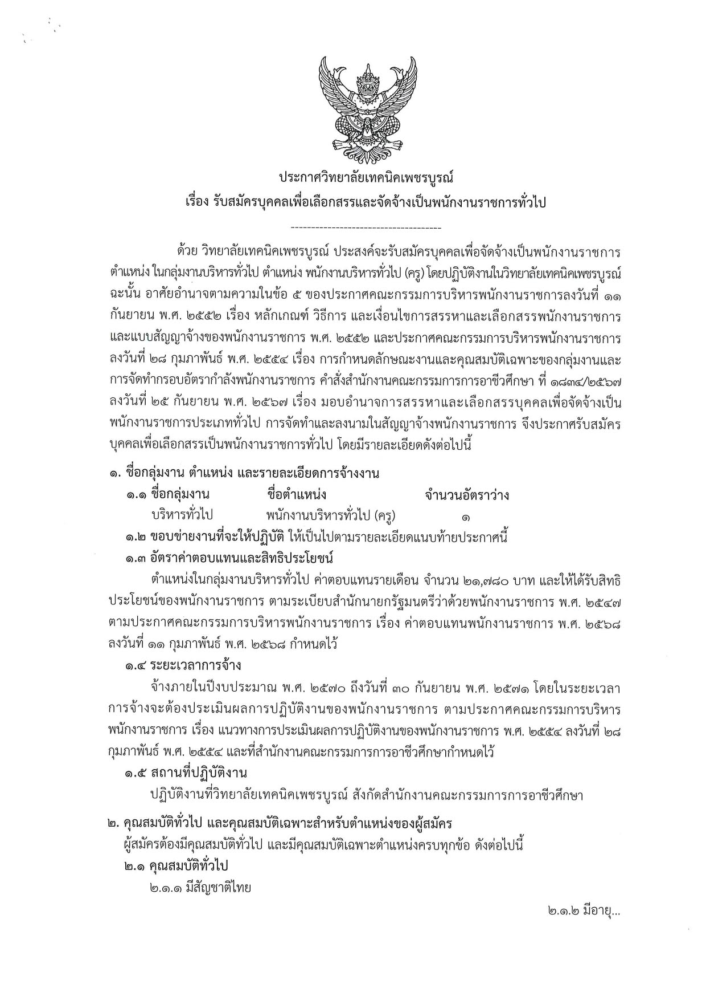
ประกาศวิทยาลัยเทคนิคเพชรบูรณ์ 🔔🔔 📌เรื่อง รับสมัครบุคคลเพื่อเลือกสรรและจัดจ้างเป็นพนักงานราชการทั่วไป(ครู)✨✨ รายละเอียดดังเอกสารแนบ
นายทองจันทร์ ประทุมโฉม ผู้อำนวยการวิทยาลัยเทคนิคเพชรบูรณ์ พร้อมคณะผู้บริหาร และหัวหน้าแผนกวิชา ร่วมปฐมนิเทศนักศึกษาฝึกประสบการณ์วิชาชีพ เพื่อเข้ารับการฝึกประสบการณ์วิชาชีพครู ณ ห้องประชุมสำ...
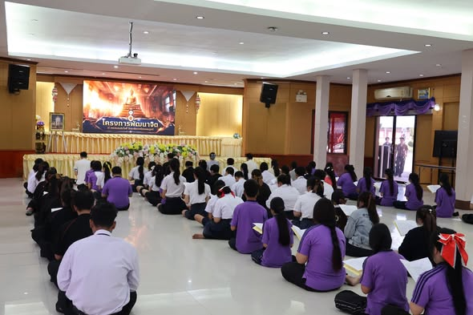
โครงการธรรมะพัฒนาจิต และคุณธรรม จริยธรรมอันดีงาม ภาคเรียนที่ 2 / 2569 ณ หอประชุมร่มโพธิ์
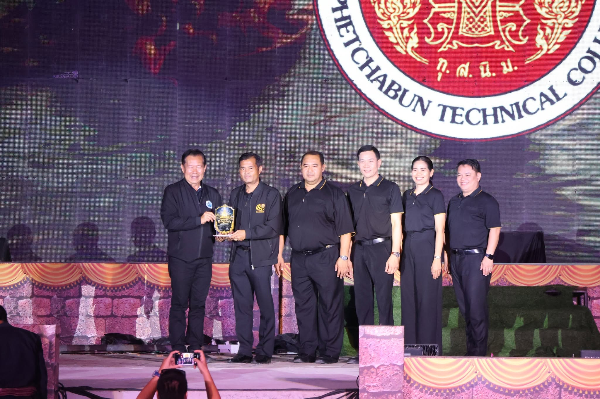
วิทยาลัยเทคนิคเพชรบูรณ์ รับมอบโล่เชิดชูเกียรติ ผู้สนับสนุนขบวนแห่พระพุทธมหาธรรมราชารอบเมือง ประจำปี 2569
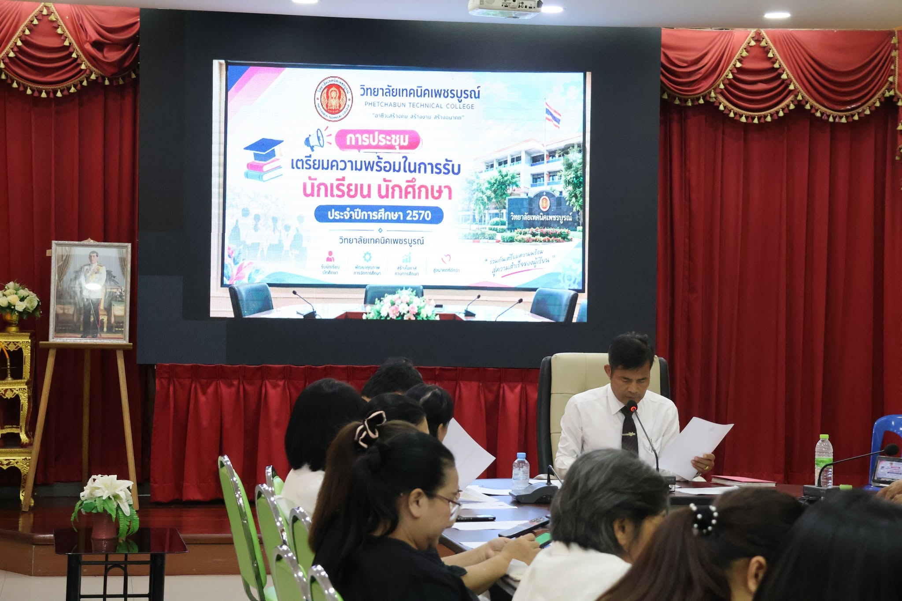
การประชุมหัวหน้าแผนกและหัวหน้างาน เพื่อวางแผนงานและเตรียมความพร้อมในการเปิดภาคเรียนปีการศึกษา 2570 และรับสมัครนักเรียน นักศึกษา (รอบโควตา) และ (รอบทั่วไป) ประจำปีการศึกษา 2570 ณ ห้องโสตทัศนศึกษา
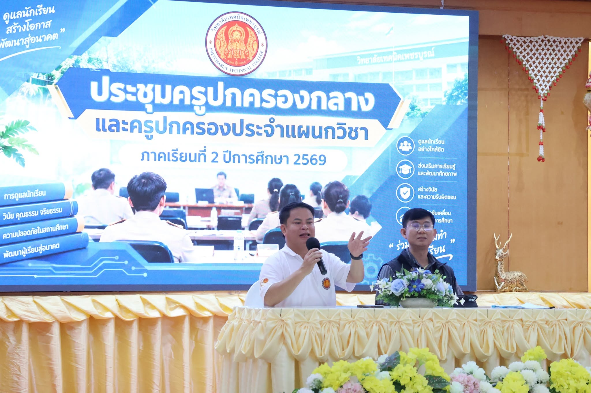
การประชุมครูปกครองกลาง และครูปกครองประจำแผนกวิชา ภาคเรียนที่ 2/2569 เพื่อวางแนวทางในการดูแลกำกับและป้องกัน แก้ไขความประพฤติระเบียบวินัยของนักเรียน นักศึกษา ให้นักเรียน นักศึกษา อยู่ในกฎระเบียบวินัย
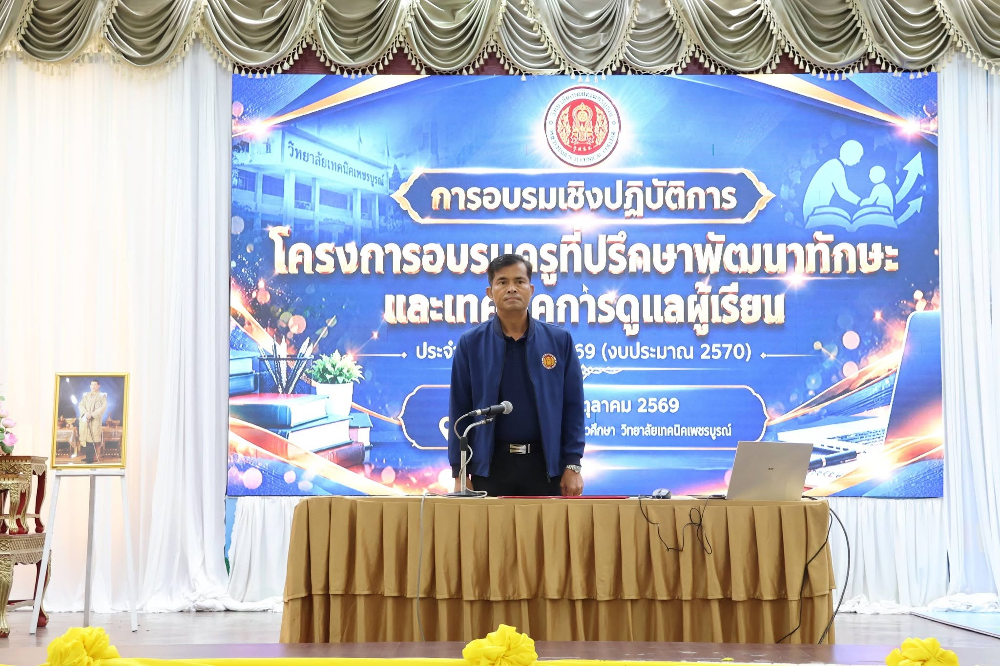
การอบรมเชิงปฏิบัติการ โครงการอบรมครูที่ปรึกษาพัฒนาทักษะ และเทคนิคการดูแลผู้เรียน ประจำปีการศึกษา 2569 (งบประมาณ 2570) วันที่ 13 ตุลาคม 2569 ณ หอประชุม 60 ปี กรมอาชีวศึกษา วิทยาลัยเทคนิคเพชรบูรณ์
นายทองจันทร์ ประทุมโฉม ผู้อำนวยการวิทยาลัยเทคนิคเพชรบูรณ์ มอบหมายให้ นางจินตนา อุททัง รองผู้อำนวยการ นำคณะครู บุคลากรทางการศึกษา วิทยาลัยเทคนิคเพชรบูรณ์ เข้าร่วมพิธีทำบุญ...
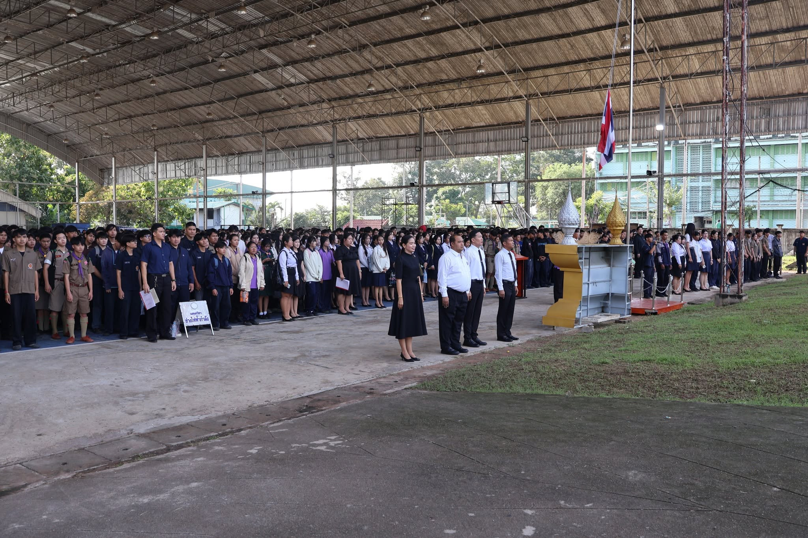
กิจกรรมหน้าเสาธง วันพุธ ที่ 7 ตุลาคม 2569
การประชุมเพื่อเตรียมความพร้อมในการจัดขบวนแห่หัวโตกลองยาว งานประเพณีอุ้มพระดำน้ำ จังหวัดเพชรบูรณ์ ณ ห้องประชุมร่มโพธิ์ วิทยาลัยเทคนิคเพชรบูรณ์
กิจกรรมหน้าเสาธง ✨✨ วันเปิดภาคเรียน 2/2569 ณ อาคารโดมอเนกประสงค์
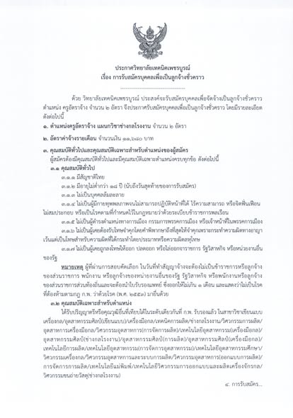
ประกาศวิทยาลัยเทคนิคเพชรบูรณ์ เรื่อง การรับสมัครบุคคลเพื่อเป็นลูกจ้างชั่วคราวรายเดือน ตำแหน่ง ครูอัตราจ้าง จำนวน 2 อัตรา
นายทองจันทร์ ประทุมโฉม ผู้อำนวยการวิทยาลัยเทคนิคเพชรบูรณ์ มอบหมายให้ นางจินตนา อุททัง รองผู้อำนวยการฝ่ายบริหารทรัพยากร นำคณะบุคลากร ร่วม “พิธีวันที่ระลึก...